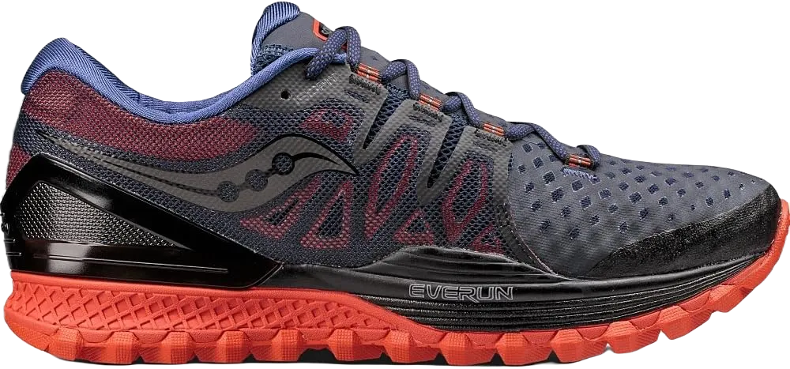
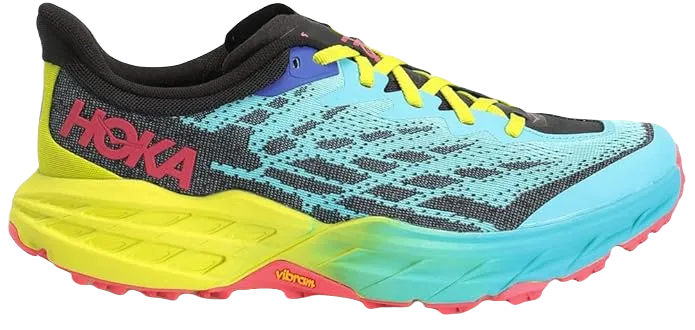
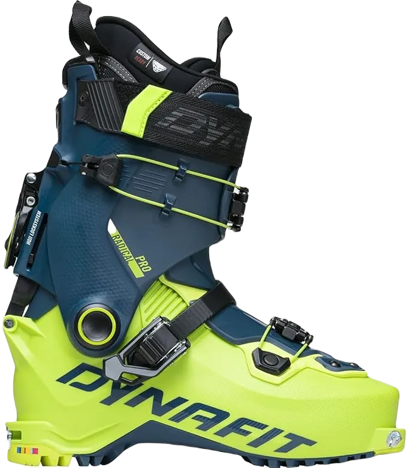

10 Best Ultramarathon Shoes for 2024
When you think of ultramarathons, certain elements come to mind—prolonged distances, tough terrain, challenging ascents and descents, varying weather conditions, support channels, relationships, and, ultimately, a profound sense of accomplishment. A key part of this journey is the ultramarathon shoe, an essential tool that must be thoroughly tested during training so the runner can rely on it come race day. It needs to withstand different climates, terrains, and long distances to ensure peak performance throughout the race.
As race participation continues to grow, especially following recent global events, now is a great time to explore the best ultramarathon shoes. These shoes are designed for endurance events, focusing on advanced technology, stability, and value. With the active community expanding, it's important to consider the popular choices for long-distance runners, particularly for trail ultras. This post will provide insights into the most reliable ultramarathon shoes, helping you navigate your next big race.
-
#1
Hoka One One Speedgoat four
.webp)
On both the track and within the ultra-running community, this shoe has become incredibly popular. After taking the pair for a spin myself, I appreciated how it truly felt like a dedicated 'race' trail shoe. It’s lightweight, well-fitted, and highly responsive, providing a solid performance on various terrains.
The only drawback is that it’s not overly aggressive, meaning it works well for a variety of trail routes but might not be the best if you prefer a close-to-ground feel. The sole is quite thick, so if you're looking for more ground contact and a pronounced heel-to-toe drop, this might not be the ideal shoe for you. However, Hoka is known for its cushioned shoes with a rocker design, so this isn't a surprise. The outsole features Vibram, which offers excellent traction and grip, making it a solid choice for trail running.
In terms of stability, this shoe performs exceptionally well, offering great balance on uneven terrain. This enhances drainage and rotation on rugged paths, reducing the risk of ankle twists. One thing I noticed is that it's especially suited for those with smaller feet, like mine -
#2
Salomon S Lab extremely 2
.webp)
This shoe is widely recognized and highly popular in the world of track, with Salomon promoting it as their top ultramarathon model. As a second-generation version, they’ve improved technical aspects like weight and durability while keeping luxury features intact. It’s still a great choice for shorter races.
Salomon is known for durable shoes suited for various terrains—whether dirt, snow, sand, or tree roots. The midsole is made from tough polyurethane foam, ideal for ultra-distance walking and running. The outsole features their ‘premium Wet Traction Contragrip,’ designed to grip slippery surfaces well.
That said, reviews indicate the shoe may not last as long as others when used for ultramarathons or heavy training, which is something to consider if durability is a priority for longer distances. -
#3
Saucony Peregrine 10
.webp)
Saucony markets this as one of their top running shoes, designed to accommodate a wide range of foot sizes and handle both uphill and downhill terrain. It’s a neutral shoe, like many running options, offering comfort while maintaining a responsive feel. This makes it a solid choice for rocky environments.
A key feature is the integrated rock plate on the shoe’s side, which protects against sharp stones. The outsole is engineered to perform well in rugged conditions, even those that typically cause faster wear and tear. Reviews have highlighted the shoe's flexibility and responsiveness, which adds to its appeal.
However, it’s recommended to break in the shoes before attempting any long-distance runs, especially ultramarathons, to ensure optimal performance and comfort over extended distances. -
#4
Columbia Trans Alp FKT II
.webp)
These mid-weight running shoes offer exceptional comfort and a sleek, supportive design. With a relatively low stack height, you’ll feel more connected to the ground compared to many other options. The 8mm drop contributes to a smooth running style, making these shoes ideal for those used to traditional running footwear, which often feature a higher drop.
The midsole cushions provide excellent comfort, while the sturdy, protective outsole is equipped with well-placed 6mm grip pockets, making them suitable for a variety of terrains. The shoes also come with a gaiter attachment to help keep debris out. However, the mesh upper isn’t the most breathable, as rip-stop reinforcements are used throughout for added durability.
This reduced breathability might actually be beneficial if you’re running in dusty or sandy conditions. The shoes also feature reinforced toe protection and a durable heel designed to withstand rocky, uneven ground. Additionally, new color options are expected in February, making these shoes even more appealing. -
#5
Saucony Xodus ISO 2
Saucony’s top-tier running shoes provide excellent protection with durable construction and V-shaped lugs, perfect for hiking and descending. The rock plate adds extra safety at the heel and toe, making them well-suited for rough terrains. Despite their robust design, the shoes remain comfortable and not overly aggressive.
They are lightweight, with a 4mm drop that encourages a natural foot strike. These shoes are built for tough conditions, making them great for long runs in challenging weather. The combination of comfort and durability ensures your feet stay protected during extended use.
With a breathable upper, they are ideal for multi-day runs. However, the toe box can feel a bit tight for some, but they fit true to size overall. These shoes offer a solid balance of protection and performance for ultramarathon runners. -
#6
Hoka One One pace instinct 2
These lightweight, comfortable, and well-fitting shoes are ideal for runners who prefer Hoka’s wide toe boxes and spacious design. Unlike some other models, this version doesn’t compromise stability, which helps reduce the risk of ankle rolling on uneven terrain. It offers a popular upper construction, similar to other top-tier running shoes, delivering both comfort and durability.
Despite their appearance, they aren't heavy, and with a low 3mm drop, they promote a forward foot strike. The grip is reliable, and the slightly stretchable, bright-colored laces add a neat touch. They are incredibly light, making them a favorite for long-distance running.
Toe protection is more minimal, and the heel cup sits lower behind the ankle than standard shoes, which may affect those with specific foot positioning. Overall, these shoes perform exceptionally well and are perfect for smart, reliable training. -
#7
Inov8 Trailroc 285
.webp)
These shoes are designed for running long distances on rugged, dry trails and rocky surfaces. The toes are well-supported while still allowing ample room in the toe box. With a lightweight design, they feature an 8mm drop and a 16mm heel, providing a stable and responsive experience.
Constructed with durability in mind, the outsole is made from high-quality rubber that offers excellent grip, along with a sharp rock plate for added protection. The midsole includes 10% shock-absorbing material, ensuring a responsive feel while effectively repelling impacts. This design adds extra safety for both the toes and heels.
The upper is sturdy yet breathable, with a simple construction that prioritizes functionality over unnecessary embellishments. Sometimes, a minimalist approach is the most effective, and this shoe exemplifies that philosophy. -
#8
Dynafit pussycat extremely
From the moment you step into these shoes, you’ll be impressed. They are thoughtfully designed walking shoes that pay attention to detail in both shape and materials.
These footwear are sturdy, well-fitted, and provide excellent protection for both the toes and heels while ensuring ample space in the toe box. The outsole features open pockets and utilizes a specialized Vibram rubber for superior grip and safety on rocky terrain. The quick lace system and overlay, although slightly positioned, are functional and effective.
The raised lugs at the front and back help keep debris out while still allowing for breathability. Overall, these shoes are highly protective and comfortable, offering an ideal platform for covering long distances in rugged, open environments. -
#9
Salomon revel in experience 2
.webp)
Unlike the highly specialized S Lab mentioned earlier, this shoe is versatile enough for both training and walking, making it suitable for various terrains. If you're new to ultramarathon training and aren't ready to invest in a dedicated race shoe, this is an excellent choice. Salomon has thoughtfully crafted every aspect of this shoe.
The outsole features what they call ‘Contagrip MA,’ designed with a unique combination of different densities. This material allows the shoe to adapt, providing either a firm or soft feel depending on the terrain. Salomon has engineered the shoe to ensure it can handle diverse conditions effectively.
In areas of potential wear, such as the heel edge, the compound has been enhanced for greater durability, making it more rigid and long-lasting. This design consideration guarantees that the shoe remains reliable across various environments. -
#10
Asics Gel-Fujitrabuco 8
.webp)
I’ve personally used these shoes and absolutely loved them. They provide excellent support, and I don’t feel the stones under my feet, which is a major concern for me on rocky trails. The shoe features a rock plate in the midsole, offering great protection.
Asics recommends this running shoe for its comfort and durability, as well as its outstanding grip. I can vouch for the grip, having tested it in muddy conditions and the sandy terrains of the Boise Mountains. It performs well in various running scenarios.
In terms of technology, Asics boasts that their ASICSGRIP outsole enhances traction on wet, slippery, and uneven surfaces. Stability is also crucial for those seeking extra support, particularly in challenging terrains.